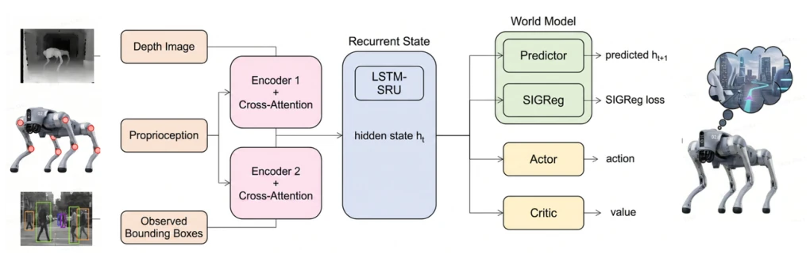
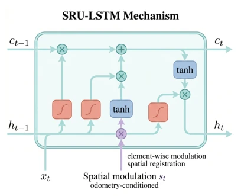
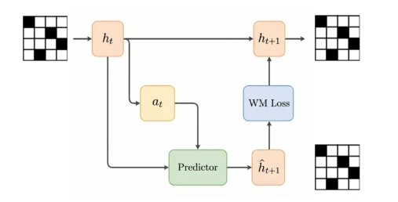
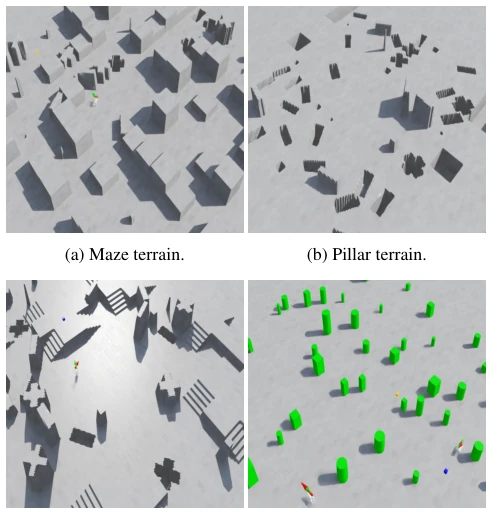
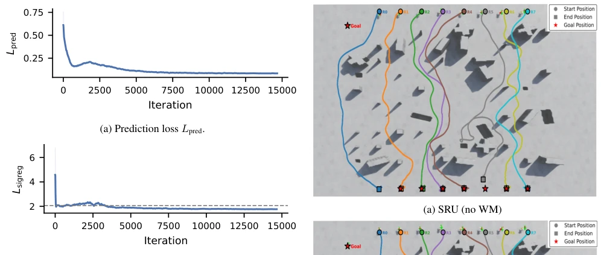
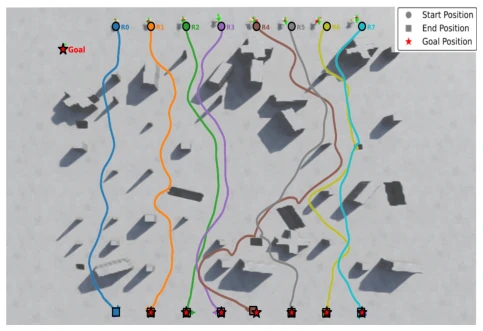
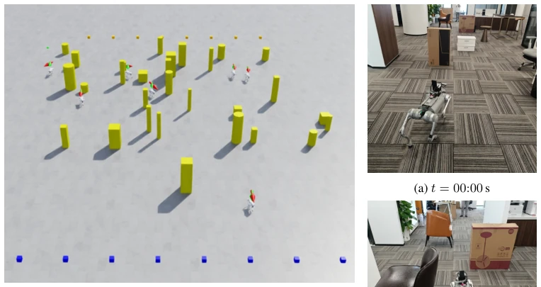
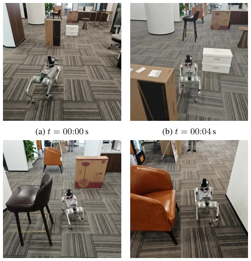
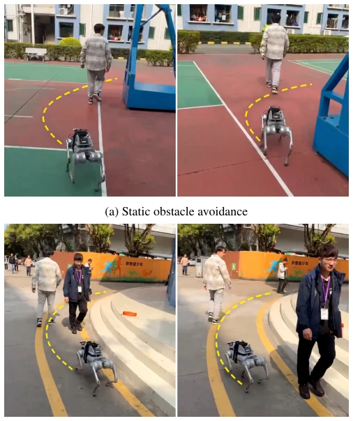

This paper employs a trick of "dreaming during training and acting dumb during inference", treating the prediction module as a teacher, discarding it after teaching, using only reactive strategies during inference to save compute. For quadruped robot navigation, dynamic obstacle avoidance is a tough nut to crack; traditional methods are either slow to react or too cumbersome. The authors use a JEPA-style approach plus SIGReg to prevent collapse, indeed allowing the SRU to remember the "future". But then again, what exactly did this "black-box" training signal learn? Can it really generalize to complex long-horizon dynamics? Zero-shot sim-to-real transfer looks impressive, but what about sensor noise and latency in actual deployment? Anyway, it saves resources compared to those running Dreamer during inference, suitable for edge devices, but don't expect it to solve all long-horizon planning problems. Although this "implicit prediction" is clever, it essentially relies on RL gradients to push through; if environmental dynamics exceed the training distribution, hidden states may still fail. However, for edge devices with high real-time requirements, this is indeed a pragmatic compromise, at least saving resources compared to those running Dreamer during inference, suitable for edge devices.
The core pain point of embodied navigation lies in "reaction lag". Existing reinforcement learning policies [34] or diffusion policies [7] mostly react based on current observations, lacking prediction of obstacles' future trajectories. In dynamic environments, relying solely on current position cannot assess collision risk, leading to avoidance actions being too late. Although world model methods [30] introduce prediction capabilities, they typically need to maintain generation or planning modules during inference, with high computational overhead, unsuitable for resource-constrained quadruped robots. This paper aims to resolve this contradiction: can prediction supervision be introduced only during the training phase, allowing the policy to learn "prediction", while remaining lightweight during deployment? This is more economical than simply stacking model capacity and avoids the latency bottleneck during inference. Furthermore, traditional methods like NavRL [34] have extremely high collision rates in dynamic scenarios, indicating that relying solely on current geometric information is insufficient to cope with complex dynamics, requiring explicit or implicit dynamic modeling.
The overall framework is based on a reactive LSTM-SRU backbone network, with inputs including depth maps, proprioception, and obstacle features. The innovation lies in the prediction branch added during training. First, the SRU unit undergoes spatial modulation via odometry signals to solve the memory alignment problem under view changes, ensuring the hidden state aligns spatially with the environment. Second, the prediction branch is a lightweight MLP, utilizing the current hidden state $h_t$ and action $a_t$ to predict the next moment $h_{t+1}$. Training objectives include three parts: RL reward gradient $L_{RL}$ ensures task completion; prediction loss $L_{pred}$ forces hidden states to encode future dynamics; SIGReg regularization $L_{sigreg}$ prevents hidden states from collapsing to constants, ensuring feature diversity. The key design is completely discarding the prediction branch during inference, keeping only the backbone network, achieving zero extra inference cost. Gradients backpropagate through hidden states, reshaping memory encoding to implicitly contain scene evolution information. This design avoids the computational burden of Dreamer series methods during inference, while solving the problem of deterministic hidden space prediction easily collapsing via SIGReg, allowing prediction signals to effectively guide policy learning.

Figure 1: Model architecture of the SRU-WM framework. The reactive backbone (black) fuses depth, proprioception, and obstacle observations through robot-conditioned attention into an LSTM-SRU navigation memory, from which actor and critic heads produce actions and value estimates. The predictive branch (blue) adds training-time latent prediction ˆht+1 = gθ(ht, at) with SIGReg regularization on ht; the branch is discarded at inference.

Figure 2: LSTM-SRU recurrent cell with spatial modulation. The odometry-derived spatial signal st modulates the candidate hidden state ˜ct, enabling the memory to remain spatially aligned with the environment as the robot’s viewpoint changes.

Figure 3: World-model training process. The LSTM-SRU back- bone produces latent states; the predictive branch performs one-step prediction and optional rollout; auxiliary losses super- vise hidden dynamics. The lower path is training-only.
Experiments were conducted in Isaac Sim, including static maze and dynamic obstacle scenes, and verified on the Unitree Go2 real robot. Comparison baselines include NavRL [34] and NavDP [7]. Metrics are Success Rate (SR), Collision Rate (CR), and Timeout Rate (TO). In the dynamic avoidance task, SRU-WM achieved 96.2% success rate, with collision rate only 3.8%, far lower than NavRL (44.9% CR) and NavDP (59.6% CR). Ablation experiments show that removing SIGReg leads to performance collapse, proving the necessity of regularization. Real robot deployment achieved zero-shot sim-to-real transfer, exhibiting consistent avoidance behavior in both indoor and outdoor dynamic scenes, verifying that the dynamic information encoded in hidden states has generalization. Additionally, training loss curves show prediction loss steadily decreasing, SIGReg stabilizing around 2.06, confirming the healthy distribution of hidden states.

Figure 4: Simulated training environments spanning diverse terrain types: maze, pillar field, stairs, and dynamic obstacle arena.

Figure 5: Training loss curves for the predictive branch. Shaded traces are raw values; solid lines are smoothed. Dashed line marks Lsigreg ≈2.06.

Figure 6: Qualitative trajectory comparison on static obstacle navigation. SRU-WM maintains straighter paths with fewer hes- itation turns compared to the reactive backbone (SRU), reflect- ing the predictive training improves spatial reasoning through mazes.

Figure 7: Dynamic obstacle navigation environment. Pedestri- ans with WANDER, CROSS, and ARC motion patterns traverse the scene at 0.3–0.8 m/s, creating time-varying collision risk.

Figure 8: Indoor static obstacle avoidance. Four sequential frames show the robot navigating a cluttered environment with fixed obstacles, maintaining consistent heading toward the goal across 12 seconds.

Figure 9: Outdoor deployment. Top: static obstacle avoidance in an open outdoor environment. Bottom: dynamic obstacle avoidance against an approaching human; the robot initiates evasive steering while the human is still outside immediate collision range. This behavior is consistent with the simulation- based collision reduction reported in Table 4.